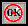
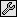
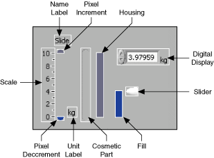

Use custom controls and indicators to extend the available set of front panel objects. You can create custom user interface components for an application that vary cosmetically from built-in LabVIEW controls and indicators. You can save a custom control or indicator you created in a directory or LLB and use the custom control or indicator on other front panels. You also can create an icon for the custom control or indicator and add it to the Controls palette. Refer to the caveats and recommendations before you begin creating custom controls and indicators.
Use type definitions and strict type definitions to link all the instances of a custom control or indicator to a saved custom control or indicator file. You can make changes to all instances of the custom control or indicator by editing only the saved custom control or indicator file, which is useful if you use the same custom control or indicator in several VIs.
|
Note��You also can use XControls to design and create complex controls and indicators in LabVIEW. Unlike custom controls, XControls have dynamic run-time and edit-time behavior that is defined by VIs that run in the background. You can create and edit XControls only in the LabVIEW Professional Development System. If a VI contains an XControl, you can run the VI in all LabVIEW packages. |
Use the Control Editor window to customize controls and indicators and to define the private data control for a LabVIEW class. For example, you can change the size, color, and relative position of the elements of a control or indicator and import images into the control or indicator.
You can display the Control Editor window in the following ways:
|
Note��If you are defining the class private data control, the Control Editor window opens with the Cluster of class private data on the block diagram automatically. Also, LabVIEW defaults the ring control of the Control Editor window to Class Private Data and you cannot change it. |
Even though the Control Editor window looks like a front panel, you use it only for customizing a single control or indicator. For a LabVIEW class this single control must be a cluster. The Control Editor window does not have a block diagram and cannot run.
The Control Editor window can contain only one control or indicator. You can customize an array or cluster control or indicator that contains other sub-controls or sub-indicators. The array or cluster itself is the single control. The Invalid Control button  appears on the Control Editor window toolbar while you move controls or indicators in and out of an array or cluster. Click the Invalid Control button to display an explanation of the error in the Error list window.
A mode indicator button on the Control Editor window toolbar shows whether you are in edit mode  or in customize mode . Click this button to toggle between the two modes. You also can switch between modes by selecting Operate�Change to Customize Mode or Operate�Change to Edit Mode. The Control Editor window opens in edit mode.
Use edit mode to change the size or color of a control or indicator and to select options from its shortcut menu, just as you do in edit mode on a front panel.
Use customize mode to make extensive changes to controls or indicators by changing the individual parts of a control or indicator.
In customize mode, a shortcut menu for each part replaces the shortcut menu for the control or indicator as a whole. Different parts have different shortcut menus. Use the shortcut menus to perform the following operations:
All controls and indicators are built from smaller parts. For example, the following illustration shows the individual parts of a slide control.

When you switch to customize mode in the Control Editor window, the parts of the control or indicator become independent. You can make changes to each part without affecting any other part. Customize mode shows all parts of the control or indicator, including any parts that are hidden in edit mode, such as the name label or the radix on a numeric control. Because the parts of the control or indicator are detached from each other, you cannot operate or change the value of the control or indicator while in customize mode.
In customize mode, you can use the Positioning tool to select two or more parts of the control or indicator and rearrange the parts by using the Align Objects, Distribute Objects, and Reorder pull-down menus on the toolbar.
Select Window�Show Parts Window to display the Control Parts window. Use the Control Parts window to size and position the individual parts of a control or indicator. The Control Parts window identifies the parts of the control or indicator and shows the exact position and size of each part in pixels.
The Current Part section of the Control Parts window contains an image and the name of the part you selected in the Control Editor window. Click the Current Part display to display and select among all the parts of the control or indicator. Click the Current Part increment or decrement arrow to scroll through the parts of the control or indicator.
When you move or resize a part in the Control Editor window, LabVIEW updates the position and size in the Current Part and Part Position and Dimensions sections of the Control Parts window. You also can enter the position and size values directly in the Part Position and Dimensions section to move or resize the part in the Control Editor window, which is useful when you must make two parts exactly the same size or align one part with another. After entering position and size values in the Part Position and Dimensions section, press the <Enter> key or click the left mouse button for the changes to take effect.
You can use the Control Editor window to add graphics, text, and decorations to a custom control or indicator in either edit mode or customize mode. If you paste a graphic or text from the clipboard, create a label using the Labeling tool, or select a decoration from the Decorations palette, the object becomes a new decoration part of the control or indicator and appears with the control or indicator when you place it on a front panel. In the Control Editor window, you can move, resize, change the layering order, or replace the new decoration part. When you use a custom control or indicator on a front panel, you can change the size of any decoration parts you added. However, you cannot move the added decoration parts.
Cosmetic parts can have a single graphic, multiple graphics that display at different times, and multiple graphics that are independent from each other. To customize cosmetic parts, place the Control Editor window in customize mode and right-click the cosmetic part you want to customize. The shortcut menu items available depend on the type of cosmetic part.
The shortcut menu for cosmetic parts with a single graphic contains the following items:
|
Note��You also can replace a decoration with an image from the clipboard by selecting the decoration and selecting Edit�Paste. To replace a decoration with an image from a file, right-click the decoration and select Import from File from the shortcut menu. |
Some cosmetic parts have multiple dependent graphics that display at different times. The different graphics are the same size and use the same colors. When you move or resize the current graphic of the cosmetic part, its other graphics also move the same amount or change size proportionally. For example, a Boolean switch has four different graphics. The first graphic shows the FALSE state. The second graphic shows the TRUE state. The third graphic shows the Switch When Released state, which is the TRUE to FALSE transition state. The fourth graphic shows the Latch When Released state, which is the FALSE to TRUE transition state. When the Boolean control is in the Switch When Released state or the Latch When Released state, the value of the Boolean control does not change until you release the mouse button. Between the time you click the mouse button and the time you release the mouse button, the Boolean control shows the third or fourth graphic as a transition state.
The shortcut menu for cosmetic parts with multiple dependent graphics contains all the items available for cosmetic parts with a single graphic plus the Picture Item item. Selecting Picture Item from the shortcut menu displays all the graphics that belong to a cosmetic part. The current graphic item has a dark border around it. When you import a graphic, you change only the current graphic item. To import a graphic for one of the other graphic items, right-click the part, select Picture Item from the shortcut menu, select the graphic item, and import the new graphic.
A cosmetic part with more than one graphic can have graphics of different sizes that each use different colors. For example, the slide uses two graphics of different sizes to show which slider is active on a multivalue slide. The shortcut menu for cosmetic parts with multiple independent graphics contains all the items available for cosmetic parts with single graphics and multiple dependent graphics plus the Independent Sizes item. Select Independent Sizes from the shortcut menu to place a checkmark next to it so you can move and resize each graphic individually without changing the other graphics of the cosmetic part.
A text part is a graphic with text, such as a label. The shortcut menu for a text part contains all the items available for cosmetic parts with a single graphic and the items available for text elements on a front panel in edit mode. The Control Parts window shows only the background graphic for the text part, not the text itself. You can customize the background graphic but not the text.
You can import graphics into Boolean controls and indicators when the Control Editor window is in edit mode, unlike other controls and indicators, into which you can import graphics only when the Control Editor window is in customize mode. When the Control Editor window is in edit mode and you right-click a Boolean control or indicator, the shortcut menu that appears contains all the items available for Boolean controls and indicators on a front panel in edit mode, as well as the Import Picture from Clipboard item.
When you place a custom control or indicator in a VI, no connection exists between the custom control or indicator you saved and the instance of the custom control or indicator in the VI. Each instance of a custom control or indicator is a separate, independent copy. Therefore, changes you make to a custom control or indicator file do not affect VIs already using that custom control or indicator. If you want to link instances of a custom control or indicator to the custom control or indicator file, save the custom control or indicator as a type definition or strict type definition. All instances of a type definition or a strict type definition link to the original file from which you created them.
When you save a custom control or indicator as a type definition or strict type definition, any data type changes you make to the type definition or strict type definition affect all instances of the type definition or strict type definition in all the VIs that use it. Also, cosmetic changes you make to a strict type definition affect all instances of the strict type definition on the front panel.
Use type definitions and strict type definitions to link all the instances of a custom control or indicator to a saved custom control or indicator file. You can make changes to all instances of the custom control or indicator by editing only the saved custom control or indicator file, which is valuable if you use the same custom control or indicator in several VIs.
Type definitions identify the correct data type for each instance of a custom control or indicator. When the data type of a type definition changes, all instances of the type definition automatically update. In other words, the data type of the instances of the type definition change in each VI where the type definition is used. However, because type definitions identify only the data type, only the values that are part of the data type update. For example, on numeric controls, the data range is not part of the data type. Therefore, type definitions for numeric controls do not define the data range for the instances of the type definitions. Also, because the item names in ring controls do not define the data type, changes to ring control item names in a type definition do not change the item names in instances of the type definition. However, if you change the item names in the type definition for an enumerated type control, the instances update because the item names are part of the data type. An instance of a type definition can have its own unique caption, label, description, tip strip, default value, size, color, or style of control or indicator, such as a knob instead of a slide.
If you change the data type in a type definition, LabVIEW converts the old default value in instances of the type definition to the new data type, if possible. LabVIEW cannot preserve the instance default value if the data type changes to an incompatible type, such as replacing a numeric control or indicator with a string control or indicator. When the data type of a type definition changes to a data type incompatible with the previous type definition, LabVIEW sets the default value of instances to the default value you specify in the .ctl file. If you do not specify a default value, LabVIEW uses the default value for the data type. For example, if you change a type definition from a numeric to a string type, LabVIEW replaces any default values associated with the old numeric data type with empty strings.
A strict type definition forces everything about an instance to be identical to the strict type definition, except the caption, label, description, tip strip, and default value. As with type definitions, the data type of a strict type definition remains the same everywhere you use the strict type definition. Strict type definitions also define other values, such as range checking on numeric controls and the item names in ring controls. The only VI Server properties available for strict type definitions are those that affect the appearance of the control or indicator, such as Visible, Disabled, Key Focus, Blinking, Position, and Bounds.
|
Note�� If you link a constant to a strict type definition, the constant will instead behave as though the link is not strict. Strict type definitions require that all instances of a type definition maintain identical cosmetic attributes. However, most cosmetic attributes are invalid on the block diagram. Because constants are only found on the block diagram, they do not maintain cosmetic attributes. |
You cannot prevent an instance of a strict type definition from automatically updating unless you remove the link between the instance and the strict type definition.
You can create and edit a type definition or strict type definition from the front panel or block diagram. Use the Control Editor window and the same techniques that you use to customize other controls and indicators to customize type definitions and strict type definitions.
You can prevent an individual instance of a type definition from automatically updating when the data type of the type definition changes by right-clicking the instance and removing the checkmark next to the Auto-Update from Type Def. shortcut menu item. Removing the checkmark from the Auto-Update from Type Def. item prevents the instance from automatically updating when the data type of the type definition changes but preserves the link between the instance and the type definition. You can remove the link between an instance and a type definition by right-clicking the instance and selecting Disconnect from Type Def. from the shortcut menu.
|
Note��You cannot prevent an instance of a strict type definition from automatically updating unless you remove the link between the instance and the strict type definition. |
If you disable automatic updating for an instance of a type definition and change the data type of the instance or change the data type of the type definition, the instance appears dimmed, and the Run button appears broken. To update the instance manually, right-click the instance and select Review and Update from Type Def. to display the Review and Update from Type Def. dialog box. To enable the application to run without updating the instance, right-click the instance and select Disconnect from Type Def. from the shortcut menu to permanently remove the link between the instance and the type definition.
If an instance of a type definition appears dimmed, you must update the instance manually using the Review and Update from Type Def. dialog box.
When you change the data type of a type definition, LabVIEW automatically attempts to update all instances of the type definition. If LabVIEW is unable to map the previous default values to the updated controls or constants when updating instances, LabVIEW places those instances in an unresolved state. An unresolved instance appears dimmed, and the Run button of the VI in which the instance exists appears broken. To resolve the data mapping discrepancies, you must manually update the instances. Alternatively, you can remove the link between unresolved instances and the type definition to enable the application to run.
You can permanently remove the link between an instance of a type definition or a strict type definition and the type definition or strict type definition by right-clicking the instance and selecting Disconnect from Type Def. from the shortcut menu. Disconnecting from the type definition or strict type definition removes the restrictions on the data type of the instance, making the instance a control or indicator.
For each instance of a type definition or strict type definition, the VI containing the instance maintains a connection to the file where you saved the type definition or strict type definition. For a VI that contains an instance of a type definition or strict type definition to run, the VI must have the file that contains the type definition or strict type definition available. If you open a VI and LabVIEW cannot find a type definition or strict type definition the VI needs, LabVIEW disables the instances of that type definition or strict type definition in the VI, and the Run button appears broken. To allow the VI to run, find and open the correct type definition or strict type definition. You also can right-click the disabled instance and select Disconnect From Type Def. from the shortcut menu to permanently remove the link between the instance and the type definition or strict type definition.
You place type definitions and strict type definitions on the front panel or block diagram the same way you place any custom control or indicator on the front panel or block diagram. When you right-click an instance of a type definition or a strict type definition, the shortcut menu includes type definition options. You can open the type definition or strict type definition from the front panel or from the block diagram by right-clicking the instance and selecting Open Type Def. from the shortcut menu.
You can identify the instance of a type definition or strict type definition on the block diagram with a glyph marking the upper left corner of the instance . If you hover the cursor over the glyph, a tip strip displays the name of the type definition or strict type definition. Changes you make to type definitions affect instances placed on block diagrams as constants in the same way the changes affect front panel instances.
|
Note��If you change a strict type definition, instances placed on block diagrams as constants act as if the link is not strict, and LabVIEW updates the constant only with data type changes. For example, if you update the string values in a ring control saved as a strict type definition, LabVIEW does not update instances of the strict type definition placed on the block diagram because the string values are not part of the data type of the ring control. |
If you place an instance of a cluster type definition or cluster strict type definition on a front panel, use the Bundle By Name function and the Unbundle By Name function on the block diagram to access the elements of the cluster. Unlike the Bundle function and the Unbundle function, which reference cluster elements by cluster order, the Bundle By Name function and the Unbundle By Name function reference elements of the cluster by name. Therefore, reordering the elements or adding new elements to the cluster type definition or cluster strict type definition does not break the VI.
If you delete an element from the cluster type definition or cluster strict type definition wired to the Bundle by Name function or the Unbundle By Name function, you must change the block diagram because the reference to the missing element becomes invalid. Invalid names in the Bundle by Name function and the Unbundle by Name function appear black. Click the Bundle by Name function or the Unbundle By Name function to display a list of valid names from which to select.
When you create references to controls in a cluster type definition or cluster strict type definition, LabVIEW uses the cluster order to determine which controls the references point to in the cluster. Because of this behavior, if you delete a control from the cluster type definition or cluster strict type definition, the remaining reference that points to the deleted control may now point to a different control in the cluster. If you delete a control in a cluster type definition or cluster strict type definition, make sure that each reference still points to the correct control in the cluster.